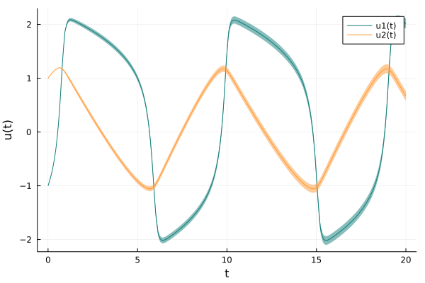

Getting Started
If you are unfamiliar with DifferentialEquations.jl, check out the official tutorial on how to solve ordinary differential equations.
Step 1: Defining a problem
To solve the Fitzhugh-Nagumo model we first set up an ODEProblem.
using ProbNumDiffEq
function fitz(u, p, t)
a, b, c = p
return [c*(u[1] - u[1]^3/3 + u[2])
-(1/c)*(u[1] - a - b*u[2])]
end
u0 = [-1.0; 1.0]
tspan = (0., 20.)
p = (0.2, 0.2, 3.0)
prob = ODEProblem(fitz, u0, tspan, p)Step 2: Solving a problem
To solve the ODEProblem we can use the solve interface that DifferentialEquations.jl defines. All we have to do is to select one of the PN algorithms: EK0 or EK1. In this example we solve the ODE with the default EK0 and high tolerance levels to visualize the resulting uncertainty
sol = solve(prob, EK0(), abstol=1e-1, reltol=1e-1)┌ Warning: The given problem is in out-of-place form. Since the algorithms in this package are written for in-place problems, it will be automatically converted.
└ @ ProbNumDiffEq ~/work/ProbNumDiffEq.jl/ProbNumDiffEq.jl/src/solve.jl:8
┌ Warning: #= /home/runner/.julia/packages/Octavian/CW4wG/src/matmul.jl:529 =#:
│ `LoopVectorization.check_args` on your inputs failed; running fallback `@inbounds @fastmath` loop instead.
│ Use `warn_check_args=false`, e.g. `@turbo warn_check_args=false ...`, to disable this warning.
└ @ Octavian ~/.julia/packages/LoopVectorization/ndGJi/src/condense_loopset.jl:825Note that ProbNumDiffEq.jl supports many of DifferentialEquations.jl's common solver options.
Step 3: Analyzing the solution
Just as in DifferentialEquations.jl, the result of solve is a solution object, and we can access the (mean) values and timesteps as usual
julia> sol[end]2-element Vector{Float64}: 2.01558819660401 0.6675894930528871julia> sol.u[5]2-element Vector{Float64}: 0.06075016580929794 1.187867591424421julia> sol.t[8]0.9128540505399382
However, the solver returns a probabilistic solution, here a Gaussian distribution over solution values:
julia> sol.pu[end]Gaussian{Vector{Float64},ProbNumDiffEq.SquarerootMatrix{Float64, Matrix{Float64}, LinearAlgebra.Diagonal{Float64, Vector{Float64}}}}([2.01558819660401, 0.6675894930528871], [0.002182638273528186 0.0; 0.0 0.002182638273528186])
It is often convenient to look at means, covariances, and standard deviations via Statistics.jl:
julia> using Statisticsjulia> mean(sol.pu[5])2-element Vector{Float64}: 0.06075016580929794 1.187867591424421julia> cov(sol.pu[5])2×2 ProbNumDiffEq.SquarerootMatrix{Float64, Matrix{Float64}, LinearAlgebra.Diagonal{Float64, Vector{Float64}}}: 1.99172e-6 0.0 0.0 1.99172e-6julia> std(sol.pu[5])2-element Vector{Float64}: 0.00141128327440722 0.0014112832744072193
By default, the posterior distribution can be evaluated for arbitrary points in time t by treating sol as a function:
julia> mean(sol(0.45))2-element Vector{Float64}: -0.27858001431750956 1.1677806167742082
Plotting
The result can be conveniently visualized through Plots.jl:
using Plots
plot(sol, color=["#107D79" "#FF9933"])